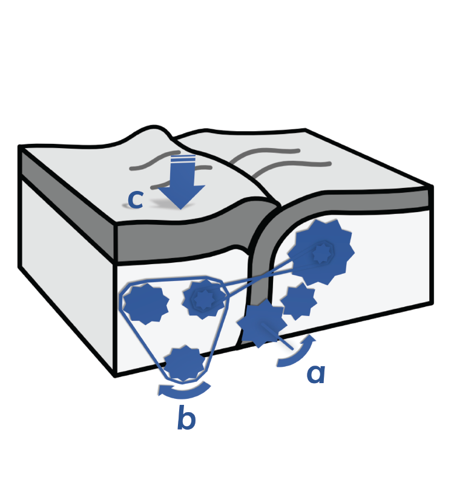

News
-

Geodynamics 101 submitted!
December 18, 2020Just in time for the holidays, we submitted our major review effort 'Geodynamics 101'. The complete manuscript spans over 90 pages and is the perfect introduction to geodynamic modelling. We submitted it to Nature Reviews Earth & Environment, so let's hope they like it! Happy holidays, everyone!
-

AGU 2020 & Youtube
December 10, 2020I went to the virtual AGU Fall meeting (I had an invited talk!!). Great experience even though it was online. To spread the word of science (and because I've always wanted to be a youtuber), I (re)started my youtube channel and uploaded my talks. Hopefully one day I'll pluck up the courage to post funny stuff as well.
-

Launch website 2.0!
November 20, 2020Welcome to my new website! Website 2.0. About time that I updated the old one from ETH, because a lot has happened. I got my PhD. I moved to the UK. A couple of papers were published! Did I forget anything? Oh yes, I've been working from home for almost 9 months now, because we're in a global pandemic. Nice.